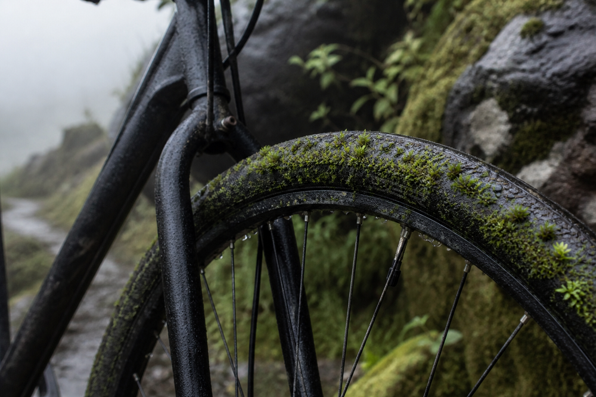

Home > Critical notes > From Quisquiza (05 of 20)
From Quisquiza (05 of 20)
Moss
Where Loss Slows
This note is part of a series written from Quisquiza, in the high-Andean cloud forest of Colombia, where ecological restoration and research now unfold side by side. It reflects on how living and working within this terrain gradually reshapes the way I think about memory, information, and the infrastructures built to sustain them. Check all the notes in this section's index.
The rain season is on its way in the Colombian Andes, and the days here in Quisquiza are foggy or cloudy on a constant basis. Water is everywhere, in all its physical states of the matter. And with abundance of water, the greenery has exploded all around: from ferns to orchids, from lichens to fungi.
And mosses. Especially them.
Mosses do not announce themselves grandilocuently. They arrive silently, like the campesinos in this place, no noise, no signs, but suddenly there. Out of the blue, one morning mosses appear on stone, on damp soil, along the edges of paths where nothing else seems interested in growing, on bark, on the stems of the roses...
(On the tires of my bike. Which I left unattended for five days. Just five days.)
They do not have roots in the usual sense. They anchor superficially. No need for more. Then they spread laterally. And they thicken where moisture persists. When water is scarce, they dry, contract, and wait. And when water returns, they resume activity within minutes. Literally.
They hold moisture not as storage, but as retention. They slow evaporation. They interrupt runoff. Water that would pass through remains a little longer. Sometimes just enough.
Also, they absorb impact. Rain does not strike bare soil directly where moss is present. The force disperses. Particles stay in place.
They bind surfaces that would otherwise loosen. Fine sediments accumulate between filaments. Micro-topography forms — small irregularities that trap more water, more organic matter, more life.
In recovering areas, they arrive early. Before grass. Before shrubs. Before trees. (Not before lichens, though. Those are the real pioneers.) They do not transform the landscape in visible ways — but they modify conditions at a scale that determines whether anything else can establish.
What looks incidental from a distance is structural up close.
Working up here makes that difficult to ignore. Systems do not begin with what dominates the landscape. They begin with what regulates loss, structure, and survival. Retention before growth. Stability before expansion.
In intellectual and institutional work, those functions rarely occupy central space. Attention goes to outputs, to visible structures, to what scales. To what makes noise, sometimes.
But continuity depends on quieter layers. Practices that hold fragments in place. Processes that slow loss without reversing it. Small, repetitive actions that prevent dispersion.
They are not efficient. They do not produce immediate results. They do not scale cleanly.
But they persist.
Remove them, and nothing replaces what they were doing. Yes: at first, nothing changes visibly. Surfaces remain, structures stand. But erosion moves faster. Gaps widen. Small losses accumulate without resistance. And eventually, retention fails.
Loss is no longer contained.
The system continues, though. Just with less to hold.